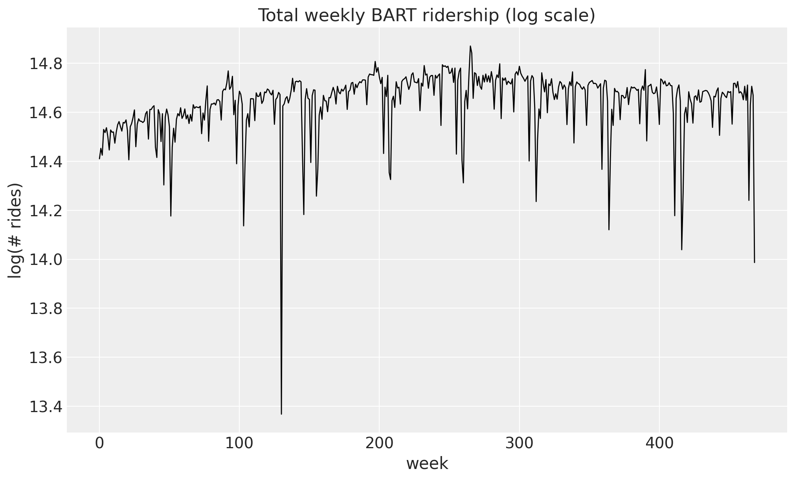
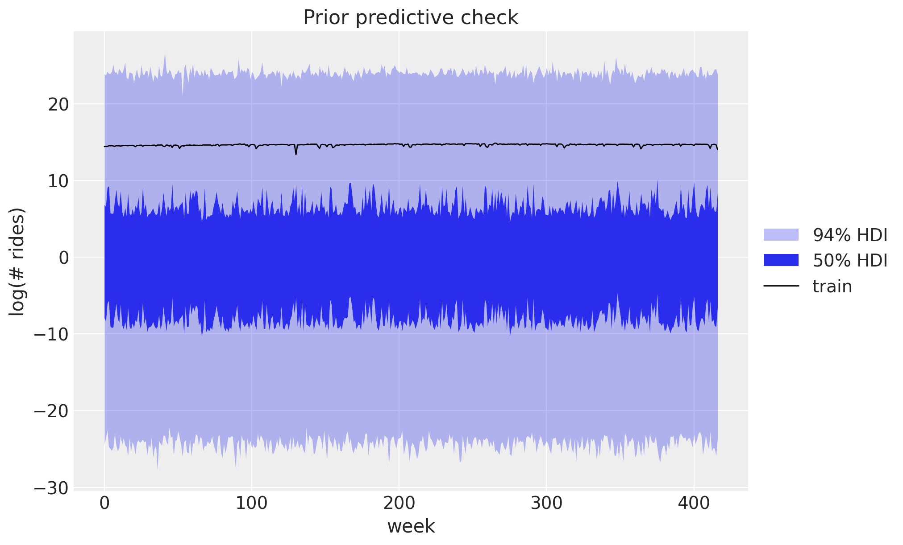
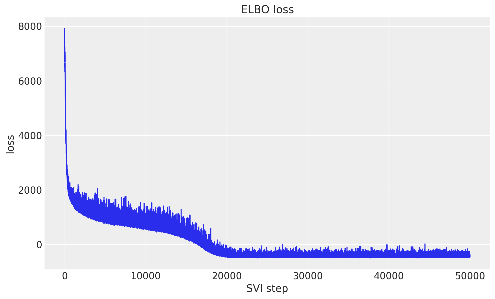
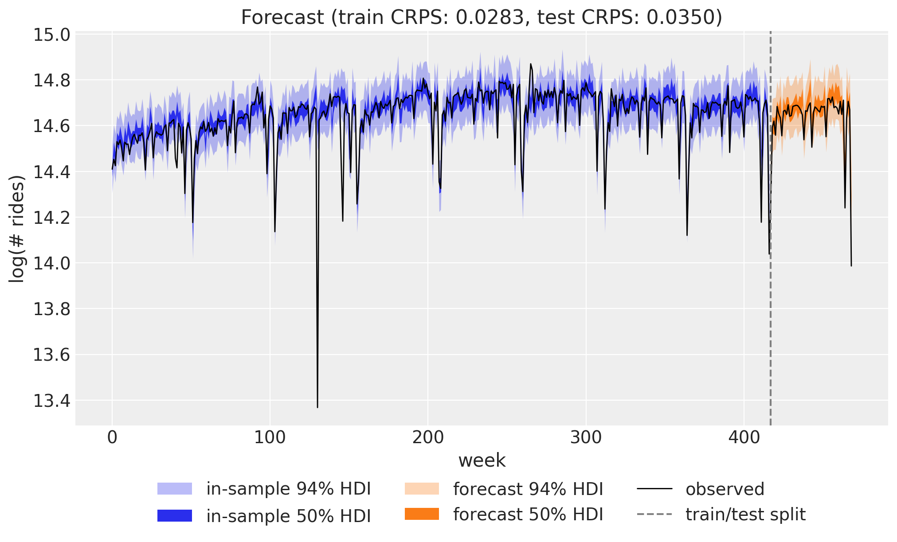
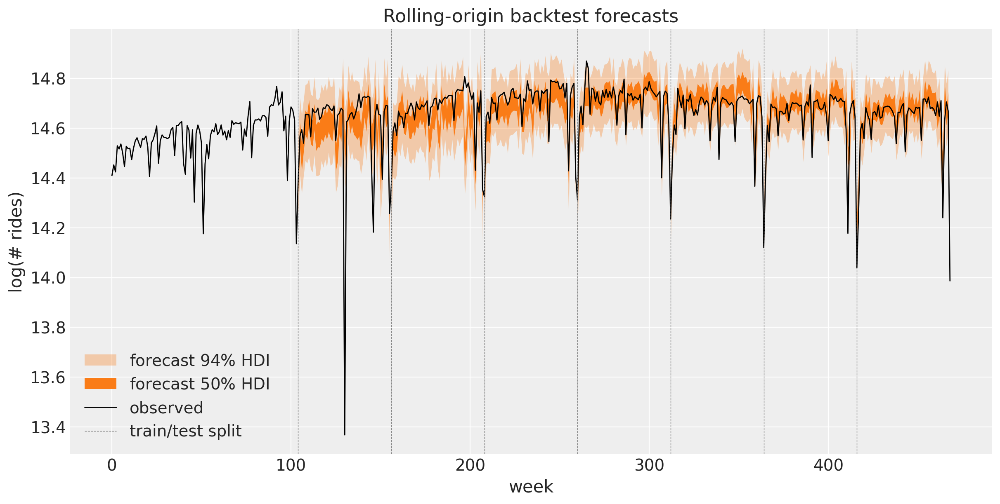
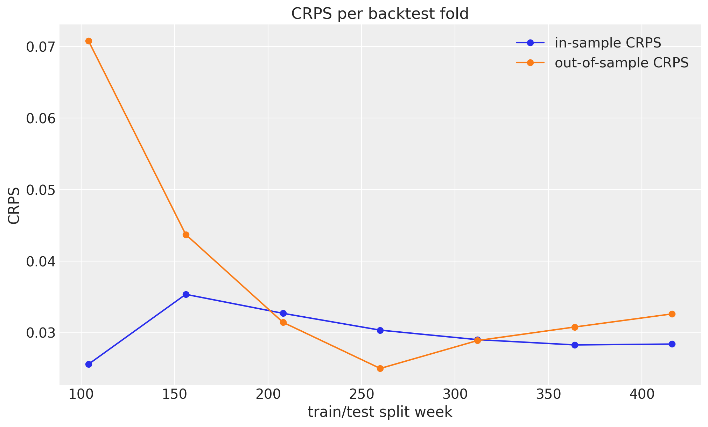
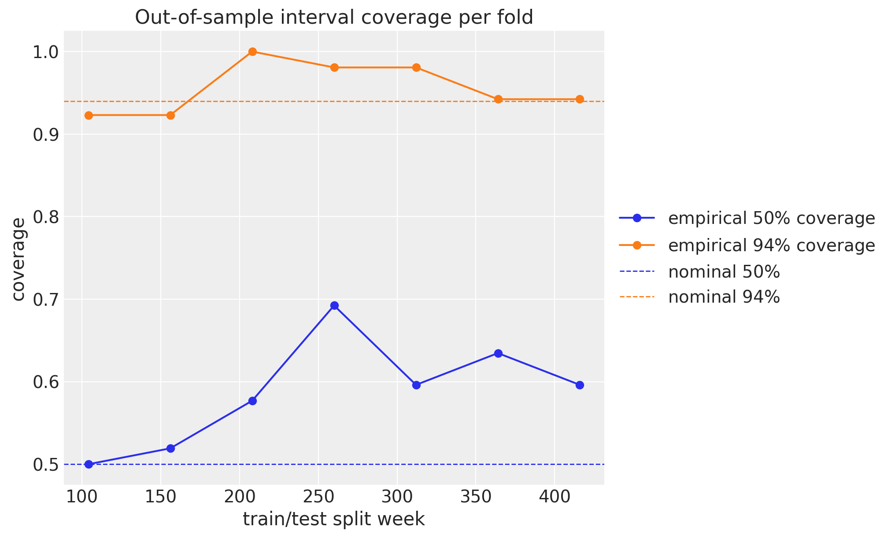
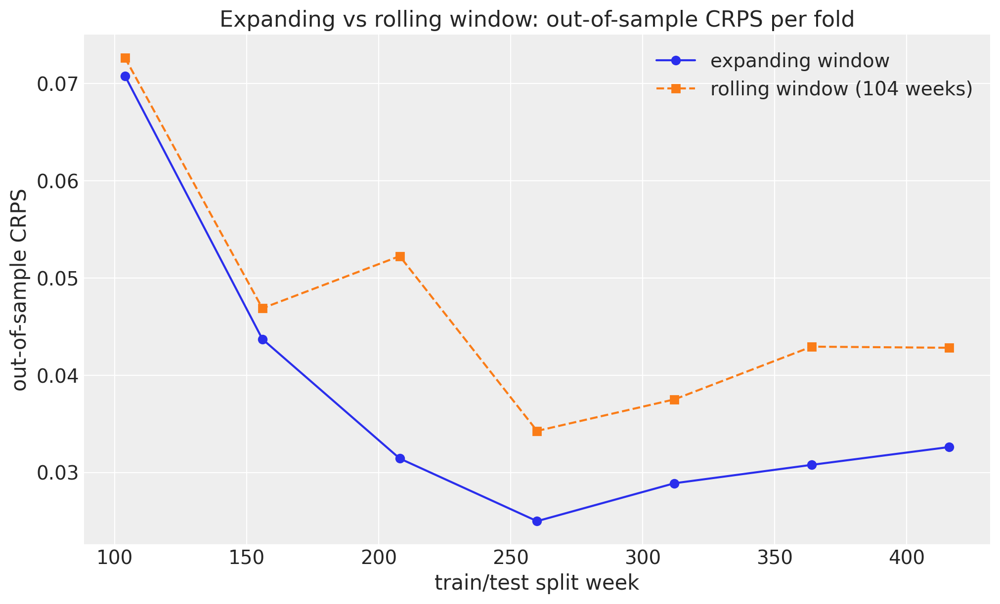
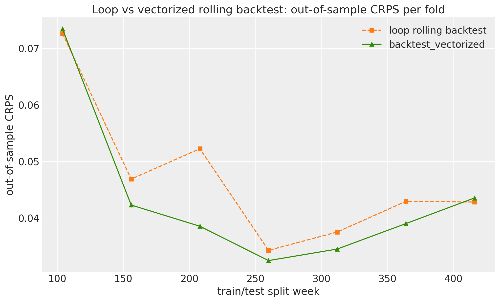

from functools import partial
from time import perf_counter
import arviz as az
import jax.numpy as jnp
import matplotlib.pyplot as plt
import numpy as np
import numpyro
import numpyro.distributions as dist
from jax import random
from numpyro.infer import SVI, Predictive, Trace_ELBO
from numpyro.infer.autoguide import AutoNormal
from numpyro.infer.reparam import LocScaleReparam
from numpyro.optim import Adam
from numpyro_forecast import (
Horizon,
backtest,
backtest_vectorized,
draw_posterior,
eval_coverage,
eval_crps,
forecast,
innovations,
predict,
predict_in_sample,
)
from numpyro_forecast.datasets import load_bart_weekly
from numpyro_forecast.features import fourier_features
from numpyro_forecast.typing import Array, ForecastModel
az.style.use("arviz-darkgrid")
plt.rcParams["figure.figsize"] = [10, 6]
plt.rcParams["figure.dpi"] = 100
plt.rcParams["figure.facecolor"] = "white"
numpyro.set_host_device_count(n=4)
rng_key = random.PRNGKey(seed=42)
%load_ext autoreload
%autoreload 2
%load_ext jaxtyping
%jaxtyping.typechecker beartype.beartype
%config InlineBackend.figure_format = "retina"Univariate forecasting
Forecast weekly BART ridership with a random-walk local level, Fourier seasonality, and a Student-t likelihood fit with SVI, then evaluate the model with rolling-origin backtesting.
Univariate forecasting with numpyro_forecast
Here we present an introduction to the numpyro_forecast package. This notebook ports the blog post Univariate time series forecasting with NumPyro (itself a port of Pyro’s forecasting tutorial) to the numpyro_forecast package. We forecast weekly BART ridership with a random-walk local level, Fourier seasonality and a Student-T likelihood, fit with stochastic variational inference (SVI), and evaluate with the continuous ranked probability score (CRPS).
Instead of hand-writing a bespoke prediction loop, we write a single plain model function and let draw_posterior and forecast handle the fit-once / forecast-any-horizon mechanics (the forecast horizon is drawn from separate _future latent sites, so the variational guide is never resized).
Note on reproducibility. We match the blog’s data, seed, optimizer and step counts. Results reproduce the blog’s behavior and CRPS magnitude but are not bit-for-bit identical: the forecast horizon uses the package’s separate-
_future-site mechanism (rather than re-running the guide over the full covariates), and the seasonal design uses fourier_features, an equivalent Fourier basis.
Prepare notebook
Read data
We work with total weekly BART ridership: hourly counts summed over all origin-destination pairs and aggregated into non-overlapping weeks. The series grows roughly multiplicatively, so we model it on the log scale, where the trend and the seasonal swings are closer to additive. Throughout the package, time lives at axis -2 and the observation dimension at axis -1, so a single series has shape (weeks, 1).
data = load_bart_weekly() # (weeks, 1), log scale
duration = data.shape[0]
print("data shape:", data.shape)
fig, ax = plt.subplots()
ax.plot(np.asarray(data[:, 0]), color="black", lw=1)
ax.set(
title="Total weekly BART ridership (log scale)",
xlabel="week",
ylabel="log(# rides)",
);data shape: (469, 1)
Train-test split
We hold out the last 52 weeks (one full year) as the test set and train on the preceding 417 weeks. Keeping a whole year out means the test window covers a complete seasonal cycle, which is exactly where a seasonal model can over- or under-fit.
T0 = 0
T2 = duration # 469
T1 = T2 - 52 # 417: train / test split
y_train = data[T0:T1]
y_test = data[T1:T2]
time = np.arange(T2)
time_train = time[T0:T1]
time_test = time[T1:T2]
print("train:", y_train.shape, "test:", y_test.shape)
fig, ax = plt.subplots()
ax.plot(time_train, np.asarray(y_train[:, 0]), color="C0", label="train")
ax.plot(time_test, np.asarray(y_test[:, 0]), color="C1", label="test")
ax.axvline(T1, color="gray", ls="--", label="train/test split")
ax.legend()
ax.set(title="Train / test split", xlabel="week", ylabel="log(# rides)");train: (417, 1) test: (52, 1)
Seasonal features
To capture the annual cycle we use a Fourier design matrix: 26 harmonics (so 52 sine and cosine columns) at a period of 365.25 / 7 weeks. Each harmonic is a sine/cosine pair at a multiple of the base frequency, and a weighted sum of them can approximate any smooth periodic shape. This spans the same subspace as the blog’s periodic_features, so paired with the Normal(0, 0.1) weight prior the regression is equivalent. The plot below shows the first few low-frequency modes.
num_terms = 26
covariates = fourier_features(duration, period=365.25 / 7, num_terms=num_terms)
covariates_train = covariates[T0:T1]
print("covariates shape:", covariates.shape)
fig, ax = plt.subplots()
for k in range(3):
ax.plot(np.asarray(covariates[:, k]), label=f"sin mode {k + 1}")
ax.legend(loc="center left", bbox_to_anchor=(1, 0.5))
ax.set(title="First Fourier modes", xlabel="week");covariates shape: (469, 52)
Model specification
The idea is a local level model with seasonality. The mean has three parts: a global bias, a random-walk level \ell_t that lets the baseline drift slowly over time, and a Fourier regression for the annual cycle. The level moves by small Gaussian increments (the drift), so it can follow long-term changes without being told their shape in advance. For the likelihood we use a Student-T instead of a Normal: its heavy tails make the model robust to the occasional outlier week.
\begin{align*} \mu_t & = \text{bias} + \ell_t + w^\top x_t, \\ \ell_t & = \ell_{t-1} + \delta_t, \\ \delta_t & \sim \text{Normal}(0, \sigma_\text{drift}), \\ y_t & \sim \text{StudentT}(\nu, \mu_t, \sigma). \end{align*}
We write the generative story as a single plain function univariate_model(covariates, data=None). Its first line, h = Horizon.from_data(covariates, data), derives the train/forecast split from the shapes. The level is the cumulative sum of drift, which we sample with innovations(h, ...) (the package’s equivalent of the blog’s scan over time). The single call to predict(h, ...) registers the zero-centered Student-T noise around the predicted mean, and it is also what wires up the train-vs-forecast machinery: in-sample steps are observed, while the forecast horizon is drawn from separate _future latent sites so the variational guide never changes shape. Finally, a LocScaleReparam on the drift switches between centered and non-centered parameterizations, which helps the SVI geometry quite a lot.
def univariate_model(covariates: Array, data: Array | None = None) -> None:
"""Local level + Fourier regression with Student-T observations."""
h = Horizon.from_data(covariates, data)
num_features = covariates.shape[-1]
bias = numpyro.sample("bias", dist.Normal(0.0, 10.0))
weight = numpyro.sample("weight", dist.Normal(0.0, 0.1).expand([num_features]).to_event(1))
drift_scale = numpyro.sample("drift_scale", dist.LogNormal(-20.0, 5.0))
nu = numpyro.sample("nu", dist.Gamma(10.0, 2.0))
sigma = numpyro.sample("sigma", dist.LogNormal(-5.0, 5.0))
centered = numpyro.sample("centered", dist.Uniform(0.0, 1.0))
drift = innovations(
h,
"drift",
lambda: dist.Normal(0.0, drift_scale),
reparam=LocScaleReparam(centered=centered),
)
level = jnp.cumsum(drift, axis=-2)
regression = (weight * covariates).sum(axis=-1, keepdims=True)
prediction = level + bias + regression
predict(h, dist.StudentT(df=nu, loc=0.0, scale=sigma), prediction)Let’s visualize the model:
numpyro.render_model(
univariate_model,
model_args=(covariates_train, y_train),
render_distributions=True,
)
Prior predictive checks
As usual (highly recommended!), we look at the prior predictive before fitting anything. We draw from the prior over the training window (data=None, so the horizon is zero and the obs site spans the train period) and plot the 50\% and 94\% HDI bands against the training series with ArviZ plot_lm. The priors are not very informative, but the implied ranges sit comfortably around the data, which is what we want.
prior_predictive = Predictive(univariate_model, num_samples=2_000, return_sites=["obs"])
rng_key, rng_subkey = random.split(rng_key)
prior_obs = prior_predictive(rng_subkey, covariates_train)["obs"][..., 0]
idata_prior = az.from_dict(
{
"prior_predictive": {"obs": np.asarray(prior_obs)[None]},
"observed_data": {"obs": np.asarray(y_train[:, 0])},
"constant_data": {"week": time_train.astype(float)},
},
coords={"time": time_train.astype(float)},
dims={"obs": ["time"], "week": ["time"]},
)
pc = az.plot_lm(
idata_prior,
y="obs",
x="week",
group="prior_predictive",
ci_kind="hdi",
ci_prob=(0.5, 0.94),
smooth=False,
visuals={
"ci_band": {"color": "C0"},
"observed_scatter": False,
"pe_line": False,
},
figure_kwargs={"figsize": (10, 6)},
)
ax = pc.viz["figure"].item().axes[0]
bands = pc.viz["ci_band"]["week"]
band_94, band_50 = bands.sel(prob=0.94).item(), bands.sel(prob=0.5).item()
band_94.set_label(r"$94\%$ HDI")
band_50.set_label(r"$50\%$ HDI")
(train_line,) = ax.plot(time_train, np.asarray(y_train[:, 0]), color="black", lw=1, label="train")
ax.legend(handles=[band_94, band_50, train_line], loc="center left", bbox_to_anchor=(1, 0.5))
ax.set(title="Prior predictive check", ylabel="log(# rides)");
Inference with SVI
We fit the model with stochastic variational inference: an AutoNormal guide optimized with Adam via an explicit SVI.run call, which returns the learned params and the ELBO losses. The loss curve should decrease and flatten out, a quick sanity check that the optimization converged.
rng_key, key_fit = random.split(rng_key)
guide = AutoNormal(univariate_model)
svi = SVI(univariate_model, guide, Adam(step_size=0.005), Trace_ELBO())
svi_result = svi.run(key_fit, 50_000, covariates_train, y_train, progress_bar=False)
fig, ax = plt.subplots()
ax.plot(svi_result.losses)
ax.set(title="ELBO loss", xlabel="SVI step", ylabel="loss");
Posterior predictive check
We now look at two things. First the in-sample posterior predictive over the training window: here the horizon is zero, so the guide is not resized and we just sample the obs site. Then the forecast over the test horizon: draw_posterior draws latent samples from the fitted guide, and forecast continues the level from its inferred endpoint and draws the future random-walk increments from the prior.
To score both we use the continuous ranked probability score (CRPS), a proper scoring rule that compares a single ground-truth value to the whole forecast distribution rather than just a point estimate. It rewards forecasts that are both sharp and calibrated, and lower is better.
rng_key, key_post, key_pp, key_fc = random.split(rng_key, 4)
posterior = draw_posterior(key_post, guide, svi_result.params, 5_000)
# In-sample posterior predictive over the training window.
train_pp = predict_in_sample(key_pp, univariate_model, posterior, covariates_train)
# Forecast over the test horizon.
forecast_draws = forecast(key_fc, univariate_model, posterior, y_train, covariates)
crps_train = eval_crps(train_pp, y_train)
crps_test = eval_crps(forecast_draws, y_test)
print(f"Train CRPS: {crps_train:.4f}")
print(f"Test CRPS: {crps_test:.4f}")
print(f"Test 50% coverage: {eval_coverage(forecast_draws, y_test, alpha=0.5):.2f} (nominal 0.50)")
print(
f"Test 94% coverage: {eval_coverage(forecast_draws, y_test, alpha=0.94):.2f} (nominal 0.94)"
)Train CRPS: 0.0283
Test CRPS: 0.0350
Test 50% coverage: 0.63 (nominal 0.50)
Test 94% coverage: 0.92 (nominal 0.94)Forecast visualization
The combined view puts everything together: the in-sample posterior predictive (blue) and the forecast over the held-out year (orange), each with 50\% and 94\% HDI bands, against the observed series. The forecast tracks the seasonal pattern and the uncertainty widens into the future, as it should.
train_obs = train_pp[..., 0]
forecast_obs = forecast_draws[..., 0]
idata_train = az.from_dict(
{
"posterior_predictive": {"obs": np.asarray(train_obs)[None]},
"observed_data": {"obs": np.asarray(y_train[:, 0])},
"constant_data": {"week": time_train.astype(float)},
},
coords={"time": time_train.astype(float)},
dims={"obs": ["time"], "week": ["time"]},
)
idata_test = az.from_dict(
{
"posterior_predictive": {"obs": np.asarray(forecast_obs)[None]},
"observed_data": {"obs": np.asarray(y_test[:, 0])},
"constant_data": {"week": time_test.astype(float)},
},
coords={"time": time_test.astype(float)},
dims={"obs": ["time"], "week": ["time"]},
)
pc = az.plot_lm(
idata_train,
y="obs",
x="week",
ci_kind="hdi",
ci_prob=(0.5, 0.94),
smooth=False,
visuals={"ci_band": {"color": "C0"}, "observed_scatter": False, "pe_line": False},
figure_kwargs={"figsize": (10, 6)},
)
train_bands = pc.viz["ci_band"]["week"]
band_train_94 = train_bands.sel(prob=0.94).item()
band_train_50 = train_bands.sel(prob=0.5).item()
az.plot_lm(
idata_test,
y="obs",
x="week",
plot_collection=pc,
ci_kind="hdi",
ci_prob=(0.5, 0.94),
smooth=False,
visuals={"ci_band": {"color": "C1"}, "observed_scatter": False, "pe_line": False},
)
test_bands = pc.viz["ci_band"]["week"]
band_test_94 = test_bands.sel(prob=0.94).item()
band_test_50 = test_bands.sel(prob=0.5).item()
ax = pc.viz["figure"].item().axes[0]
band_train_94.set_label(r"in-sample $94\%$ HDI")
band_train_50.set_label(r"in-sample $50\%$ HDI")
band_test_94.set_label(r"forecast $94\%$ HDI")
band_test_50.set_label(r"forecast $50\%$ HDI")
(obs_line,) = ax.plot(time, np.asarray(data[:, 0]), color="black", lw=1, label="observed")
split_line = ax.axvline(T1, color="gray", ls="--", label="train/test split")
ax.legend(
handles=[band_train_94, band_train_50, band_test_94, band_test_50, obs_line, split_line],
loc="upper center",
bbox_to_anchor=(0.5, -0.1),
ncol=3,
)
ax.set(
title=f"Forecast (train CRPS: {crps_train:.4f}, test CRPS: {crps_test:.4f})",
ylabel="log(# rides)",
);
Rolling-origin backtesting
A single train/test split tells us how the model did on one held-out year. A more honest picture of generalization comes from rolling-origin backtesting: we repeatedly move the train/test boundary forward, refit, and forecast the next window, so every later part of the series is scored out-of-sample exactly once. numpyro_forecast.backtest runs this loop on the full series for us, refitting univariate_model per fold through a small forecast_fn/in_sample_fn closure pair: each one fits with SVI and then draws with draw_posterior, exactly as we did for the single train/test split above.
backtest offers two windowing strategies through its window_type argument. An expanding window (the default) trains each fold on all history up to its split point, so the training set grows fold by fold. A rolling window instead holds the training length fixed at train_window and slides it forward, so every fold sees the same number of most-recent observations while older data drops off the back. We walk through the expanding window first, then contrast the two directly at the end of this section.
We use an expanding window: each fold trains on everything up to its split point and forecasts the next 52 weeks (test_window=52), stepping forward a full year at a time (stride=52) so the folds do not overlap and the forecast overlay stays readable. The first min_train_window=104 weeks (two years) seed the initial training window, matching Pyro’s tutorial. With eval_train=True we also score the in-sample posterior predictive of each fold with the same CRPS metric (this is why in_sample_fn is required below), and keep_predictions=True retains each fold’s out-of-sample forecast samples so we can plot them. Both options default to off, keeping the default backtest API faithful to Pyro.
One practical point: because every fold is refit from scratch, each one needs enough optimization to converge. We give SVI num_steps=50_000 per fold (the same budget as the main fit) so that the larger expanding windows are fit just as well as the small early ones, which keeps the inferred drift volatility stable and the per-fold scores comparable. With too small a budget the later windows would be under-fit, inflating drift_scale so that both the forecast bands and the in-sample CRPS grow spuriously with window length.
def forecast_fn(
rng_key: Array,
model: ForecastModel,
train_data: Array,
train_covariates: Array,
full_covariates: Array,
num_samples: int,
*,
batch_size: int | None = None,
) -> Array | np.ndarray:
"""Fit ``model`` on the training window with SVI and forecast the test horizon."""
key_fit, key_post, key_fc = random.split(rng_key, 3)
fold_guide = AutoNormal(model)
fold_svi = SVI(model, fold_guide, Adam(step_size=0.005), Trace_ELBO())
result = fold_svi.run(key_fit, 50_000, train_covariates, train_data, progress_bar=False)
fold_posterior = draw_posterior(
key_post, fold_guide, result.params, num_samples, batch_size=batch_size
)
return forecast(
key_fc, model, fold_posterior, train_data, full_covariates, batch_size=batch_size
)
def in_sample_fn(
rng_key: Array,
model: ForecastModel,
train_data: Array,
train_covariates: Array,
num_samples: int,
*,
batch_size: int | None = None,
) -> Array | np.ndarray:
"""Fit ``model`` on the training window with SVI and score its in-sample fit."""
key_fit, key_post, key_pred = random.split(rng_key, 3)
fold_guide = AutoNormal(model)
fold_svi = SVI(model, fold_guide, Adam(step_size=0.005), Trace_ELBO())
result = fold_svi.run(key_fit, 50_000, train_covariates, train_data, progress_bar=False)
fold_posterior = draw_posterior(
key_post, fold_guide, result.params, num_samples, batch_size=batch_size
)
return predict_in_sample(
key_pred, model, fold_posterior, train_covariates, batch_size=batch_size
)num_backtest_samples = 2_000
metrics = {
"crps": eval_crps,
"coverage_50": partial(eval_coverage, alpha=0.5),
"coverage_94": partial(eval_coverage, alpha=0.94),
}
rng_key, rng_subkey = random.split(rng_key)
results = backtest(
rng_subkey,
data, # full dataset, no train/test split
covariates, # full covariates
lambda: univariate_model,
forecast_fn=forecast_fn,
in_sample_fn=in_sample_fn,
metrics=metrics,
test_window=52, # 1-year horizon per fold
stride=52, # non-overlapping folds for a clean plot_lm panel
min_train_window=104, # 2 years before the first fold, matching Pyro's start
num_samples=num_backtest_samples,
eval_train=True,
keep_predictions=True,
)
split_weeks = [r.t1 for r in results]
insample_crps = [r.train_metrics["crps"] for r in results]
oos_crps = [r.metrics["crps"] for r in results]
oos_cov_50 = [r.metrics["coverage_50"] for r in results]
oos_cov_94 = [r.metrics["coverage_94"] for r in results]
print(f"folds: {len(results)}")
print(f"mean in-sample CRPS: {np.mean(insample_crps):.4f}")
print(f"mean out-of-sample CRPS: {np.mean(oos_crps):.4f}")
print(f"mean out-of-sample 50% coverage: {np.mean(oos_cov_50):.2f} (nominal 0.50)")
print(f"mean out-of-sample 94% coverage: {np.mean(oos_cov_94):.2f} (nominal 0.94)")folds: 7
mean in-sample CRPS: 0.0300
mean out-of-sample CRPS: 0.0376
mean out-of-sample 50% coverage: 0.59 (nominal 0.50)
mean out-of-sample 94% coverage: 0.96 (nominal 0.94)Rolling forecasts
Overlaying every fold’s out-of-sample forecast (orange 50\% and 94\% HDI bands) on the full observed series gives the rolling-origin view: each band picks up where the previous fold’s training data ended, so together they trace a continuous one-year-ahead forecast across the second half of the series. The dashed lines mark the successive train/test splits.
pc = None
for r in results:
prediction = r.prediction
if prediction is None: # keep_predictions=True guarantees this never triggers
continue
weeks = time[r.t1 : r.t2].astype(float)
idata = az.from_dict(
{
"posterior_predictive": {"obs": np.asarray(prediction[..., 0])[None]},
"observed_data": {"obs": np.asarray(data[r.t1 : r.t2, 0])},
"constant_data": {"week": weeks},
},
coords={"time": weeks},
dims={"obs": ["time"], "week": ["time"]},
)
if pc is None:
pc = az.plot_lm(
idata,
y="obs",
x="week",
ci_kind="hdi",
ci_prob=(0.5, 0.94),
smooth=False,
visuals={"ci_band": {"color": "C1"}, "observed_scatter": False, "pe_line": False},
figure_kwargs={"figsize": (12, 6)},
)
bands = pc.viz["ci_band"]["week"]
band_94, band_50 = bands.sel(prob=0.94).item(), bands.sel(prob=0.5).item()
else:
az.plot_lm(
idata,
y="obs",
x="week",
plot_collection=pc,
ci_kind="hdi",
ci_prob=(0.5, 0.94),
smooth=False,
visuals={"ci_band": {"color": "C1"}, "observed_scatter": False, "pe_line": False},
)
if pc is None:
msg = "no folds were plotted"
raise ValueError(msg)
ax = pc.viz["figure"].item().axes[0]
band_94.set_label(r"forecast $94\%$ HDI")
band_50.set_label(r"forecast $50\%$ HDI")
(obs_line,) = ax.plot(time, np.asarray(data[:, 0]), color="black", lw=1, label="observed")
split_lines = [
ax.axvline(r.t1, color="gray", ls="--", lw=0.5, label="train/test split") for r in results
]
ax.set(title="Rolling-origin backtest forecasts", ylabel="log(# rides)")
ax.legend(handles=[band_94, band_50, obs_line, split_lines[0]], loc="lower left");
Within each fold the band fans out gently from its train/test split toward the right. That is the random-walk level diffusing: the level is a cumulative sum of drift increments (level = jnp.cumsum(drift, axis=-2)), and over the forecast horizon those future increments are drawn from the prior, so the predictive standard deviation grows like the square root of the horizon. The seasonal Fourier term is periodic and the Student-T observation noise is roughly constant, so this within-fold growth is dominated by the level diffusing. It is irreducible: more training data cannot make next year’s random increments knowable.
Across folds the bands reset at each dashed split, where the model is refit and re-conditioned on all data up to that point, and their width stays stable from fold to fold. Each fold is fit with num_steps=50_000 (the same budget as the main fit), so every expanding window converges and the inferred drift volatility is consistent. The bands therefore do not balloon as the series lengthens; under-training would leave the larger windows under-fit, inflate drift_scale, and widen the later folds spuriously.
The fit looks well calibrated, and the coverage plot further below makes that claim precise: the observed series stays inside the 94\% band almost everywhere and inside the 50\% band roughly half the time, close to the nominal levels. The sharp downward holiday spikes occasionally pierce the lower band, and that is by design: the heavy-tailed Student-T likelihood treats them as outliers rather than widening the whole band to swallow them.
CRPS per fold
The per-fold CRPS shows the model generalizing better as it sees more history. The out-of-sample score is highest for the first, data-starved fold (trained on just the initial two years) and falls steeply as the expanding window grows, then flattens out near the in-sample level: more training data buys a sharper, better-calibrated one-year-ahead forecast, exactly as we would hope. The in-sample CRPS stays low and roughly flat across folds, because with num_steps=50_000 each fold converges regardless of window length, so the fit quality does not drift.
The train-versus-test gap is therefore widest early, when data is scarce, and closes as history accumulates (the two curves even cross near the middle of the series). That closing gap is the healthy signature of a model whose generalization improves with more data, rather than an under-fit whose error would instead grow with window length. If you shrink num_steps you will see that healthy pattern break: both curves climb with the window as the larger folds stop converging.
fig, ax = plt.subplots()
ax.plot(split_weeks, insample_crps, "o-", color="C0", label="in-sample CRPS")
ax.plot(split_weeks, oos_crps, "o-", color="C1", label="out-of-sample CRPS")
ax.legend()
ax.set(xlabel="train/test split week", ylabel="CRPS", title="CRPS per backtest fold");
Forecast calibration
CRPS rewards sharp and calibrated forecasts but does not separate the two, so “the forecasts look calibrated” deserves its own number. We score the empirical coverage of each fold’s out-of-sample bands: the fraction of held-out weeks that actually fall inside the central 50\% and 94\% prediction intervals. A well-calibrated forecast covers close to its nominal level, so the points should track the dashed reference lines. Points above mean the bands are too wide (under-confident); points below mean they are too narrow (over-confident). This is the quantitative version of the “stays inside the bands” eyeball check from the rolling-forecast plot.
A small caveat: eval_coverage measures coverage of the central quantile interval, while the plotted bands are arviz HDI. For the near-symmetric Student-T posterior predictive here the two nearly coincide, so this is a faithful check of the bands shown above.
fig, ax = plt.subplots()
ax.plot(split_weeks, oos_cov_50, "o-", color="C0", label=r"empirical $50\%$ coverage")
ax.plot(split_weeks, oos_cov_94, "o-", color="C1", label=r"empirical $94\%$ coverage")
ax.axhline(0.5, color="C0", ls="--", lw=1, label=r"nominal $50\%$")
ax.axhline(0.94, color="C1", ls="--", lw=1, label=r"nominal $94\%$")
ax.legend(loc="center left", bbox_to_anchor=(1, 0.5))
ax.set(
xlabel="train/test split week",
ylabel="coverage",
title="Out-of-sample interval coverage per fold",
);
Expanding vs rolling windows
The run above expanded the training window fold by fold. Switching to a rolling window takes a single argument, window_type="rolling", plus a fixed train_window. We rerun the same backtest with a 104-week (two-year) rolling window, matching the expanding run’s seed so the two share identical split points, horizon, stride, sample count, and SVI budget. The only thing that changes is whether each fold keeps the older history or drops it.
rng_key, rng_subkey = random.split(rng_key)
rolling_results = backtest(
rng_subkey,
data,
covariates,
lambda: univariate_model,
forecast_fn=forecast_fn,
metrics=metrics,
window_type="rolling", # fixed-size training window instead of expanding
train_window=104, # 2 years, matching the expanding seed so the split points line up
test_window=52, # 1-year horizon per fold, as before
stride=52, # same non-overlapping folds
num_samples=num_backtest_samples,
)
rolling_oos_crps = [r.metrics["crps"] for r in rolling_results]
print(f"expanding folds: {len(results)} | rolling folds: {len(rolling_results)}")
print(f"expanding mean out-of-sample CRPS: {np.mean(oos_crps):.4f}")
print(f"rolling mean out-of-sample CRPS: {np.mean(rolling_oos_crps):.4f}")
for wk, exp_c, roll_c in zip(split_weeks, oos_crps, rolling_oos_crps, strict=True):
print(f" split week {wk:>3}: expanding {exp_c:.4f} rolling {roll_c:.4f}")expanding folds: 7 | rolling folds: 7
expanding mean out-of-sample CRPS: 0.0376
rolling mean out-of-sample CRPS: 0.0470
split week 104: expanding 0.0708 rolling 0.0726
split week 156: expanding 0.0437 rolling 0.0469
split week 208: expanding 0.0314 rolling 0.0523
split week 260: expanding 0.0250 rolling 0.0343
split week 312: expanding 0.0289 rolling 0.0375
split week 364: expanding 0.0308 rolling 0.0429
split week 416: expanding 0.0326 rolling 0.0428Both strategies train each fold on the same fixed 104-week window at the first split, then diverge: the expanding window keeps every additional year while the rolling window always discards all but the most recent two.
fig, ax = plt.subplots()
ax.plot(split_weeks, oos_crps, "o-", color="C0", label="expanding window")
ax.plot(split_weeks, rolling_oos_crps, "s--", color="C1", label="rolling window (104 weeks)")
ax.legend()
ax.set(
xlabel="train/test split week",
ylabel="out-of-sample CRPS",
title="Expanding vs rolling window: out-of-sample CRPS per fold",
);
The mechanism behind the two curves is the random-walk level. Each forecast is anchored at the last observed level and fans out at a rate set by the inferred drift volatility drift_scale, which every fold estimates from its own training window. The expanding window estimates that volatility from all history and keeps sharpening it as data accumulates, so its out-of-sample CRPS falls steeply after the data-starved first fold and then settles near the in-sample floor. The rolling window only ever sees the most recent two years, so after its own early improvement it plateaus at a higher, noisier level: it keeps discarding the extra history that the expanding window compounds.
Here the expanding window is the clear winner: it scores a lower out-of-sample CRPS on every fold (mean 0.0376 versus 0.0470), and the two are closest only at the first split, where they happen to train on the same two years, before the gap opens up. That is what we should expect on this BART series, where the trend and seasonality are stable and old observations stay informative, so throwing them away can only hurt. The rolling window earns its keep on a different kind of series, one with structural breaks or slow regime drift, where distant history is misleading rather than helpful and a fixed recency focus keeps the forecast adapting, at a bounded, constant fitting cost per fold. window_type lets you encode whichever assumption matches your data without touching anything else in the backtest.
Vectorized rolling backtest
The rolling loop above refits one fold at a time, so each fold pays its own SVI compilation and Python-loop overhead. Because every fold shares the same model, guide, and window sizes, backtest_vectorized can instead fit all folds in a single vmapped SVI run: model, guide, and optimizer compile once, and the per-fold losses, forecasts, and metrics come out stacked along a leading window axis.
The metrics mapping needs no change at all. Metrics are pure JAX scalar kernels, so the partial-bound 50\% and 94\% coverage levels defined earlier are scored inside the same single fused computation, right alongside the default CRPS. The two backtests are estimator-equivalent but differ in PRNG stream layout, so the per-fold numbers agree statistically rather than bitwise.
rng_key, rng_subkey = random.split(rng_key)
start_seconds = perf_counter()
vectorized_results = backtest_vectorized(
rng_subkey,
data,
covariates,
lambda: univariate_model,
train_window=104, # same rolling configuration as the loop run above
test_window=52,
stride=52,
num_steps=50_000,
guide=AutoNormal(univariate_model),
optim=Adam(step_size=0.005),
num_samples=num_backtest_samples,
metrics=metrics, # same custom mapping, including both partial-bound coverage levels
)
vectorized_seconds = perf_counter() - start_seconds
loop_seconds = sum(r.walltime for r in rolling_results)
vectorized_oos_crps = np.asarray(vectorized_results.metrics["crps"])
vectorized_cov_50 = float(vectorized_results.metrics["coverage_50"].mean())
vectorized_cov_94 = float(vectorized_results.metrics["coverage_94"].mean())
print(f"folds: {vectorized_results.t0.shape[0]} in one vmapped SVI fit")
print(
f"wall-clock: vectorized {vectorized_seconds:.1f}s (incl. compile)"
f" | loop {loop_seconds:.1f}s"
)
print(f"vectorized mean out-of-sample CRPS: {vectorized_oos_crps.mean():.4f}")
print(f"loop mean out-of-sample CRPS: {np.mean(rolling_oos_crps):.4f}")
print(f"vectorized mean 50% coverage: {vectorized_cov_50:.2f} (nominal 0.50)")
print(f"vectorized mean 94% coverage: {vectorized_cov_94:.2f} (nominal 0.94)")folds: 7 in one vmapped SVI fit
wall-clock: vectorized 2.8s (incl. compile) | loop 20.9s
vectorized mean out-of-sample CRPS: 0.0434
loop mean out-of-sample CRPS: 0.0470
vectorized mean 50% coverage: 0.50 (nominal 0.50)
vectorized mean 94% coverage: 0.95 (nominal 0.94)fig, ax = plt.subplots()
ax.plot(split_weeks, rolling_oos_crps, "s--", color="C1", label="loop rolling backtest")
ax.plot(split_weeks, vectorized_oos_crps, "^-", color="C2", label="backtest_vectorized")
ax.legend()
ax.set(
xlabel="train/test split week",
ylabel="out-of-sample CRPS",
title="Loop vs vectorized rolling backtest: out-of-sample CRPS per fold",
);
Both estimators tell the same story fold by fold, and the printed wall-clock numbers show what a single fused fit buys on this model; the vectorized advantage grows with the number of folds, since compilation is paid once rather than per fold. The trade-offs are spelled out in the backtest_vectorized docstring: fixed-size rolling windows only, one shared model instance, a single guide shared by every window (an autoguide or a hand-written guide function), and pure JAX metrics, which the coverage partials above already are.
Next steps
This local level model with seasonality is a solid baseline. From here a few directions are natural: add holiday or special-event effects (dummy variables or Gaussian bump functions) for days the smooth seasonal basis cannot capture, or move to many related series at once. The last of these is the subject of the two companion notebooks, hierarchical forecasting I and II, which generalize this same model to a panel of BART stations. See also Pyro’s original forecasting tutorial.